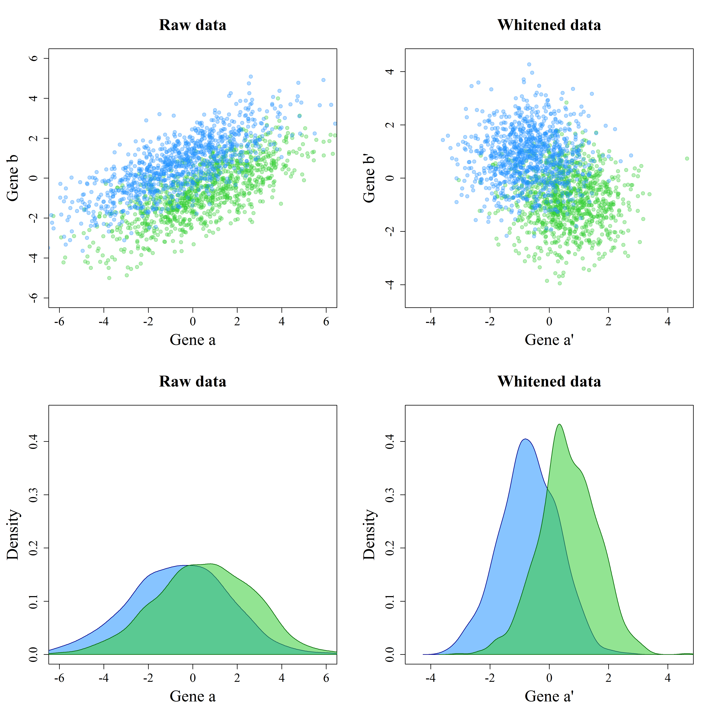

Whitening
Erik-Jan van Kesteren
Introduction
The work of Verena Zuber and Korbinian Strimmer1 2 3 has inspired me to create this post. The journal articles I linked to in the footnote are absolutely worth reading! I certainly enjoyed them. In this blog, I try to convey my understanding of their work on gene selection and data whitening / decorrelation as a preprocessing step.
Gene selection
I stumbled upon whitening through my thesis research. In my thesis, I am looking at filter methods for feature selection in high-dimensional data, specifically in microarray (genetic) data. There are many different microarray and gene sequencing methods, but for simplicity let’s assume that microarray data is information on the level of gene expression for each hybridised4 gene. The goal with these data is often classification into two groups, e.g., malignant or benign. Because the high-dimensional nature of these data does not allow us to build a simple classification model (sometimes over 20 000 genes are hybridised!), we need to select genes which are important for classification5.
Let’s take an example: we want to classify tissue in two categories: green and blue. For this, we collect pieces of green and blue tissue from as many participants (\(n\)) as possible, and we process those pieces to get their high-dimensional genomic microarray data. What results is an \(n \times p\) data matrix, where \(p\) is the amount of columns or genes hybridised6. Our task is to select the subset \(q \in p\) of genes (features) which can predict the classes best.
Filtering
Aside from using black-box methods such as regularisation, support vector machines, or random forests, the most simple way of selecting the subset \(q\) is through filter methods. Many filter methods exist7, but the most straightforward one is as follows: Select the \(k\) genes with the highest differential expression, that is \(\text{abs}(\mu_{green}-\mu_{blue})\). The intuition behind this is this: genes that vary a lot across groups are very “predictive” of the class which their objects of study come from. For example, take the two hypothetical genes with expression levels below:
par(family="serif")
# Large DE
polygon(curve(expr = dnorm(x, mean = -2, sd = 1.2),
from = -7, to = 7, ylab = "Density",
xlab="Expression", bty = "L", ylim = c(0,0.37)),
border = "#006400", col = "#32CD3288")
abline(v = -2, col= "white")
par(new=TRUE)
polygon(curve(expr = dnorm(x, mean = 2, sd = 1.2),
from = -7, to = 10, ylab = "", xlim = c(-7,7),
xlab="", bty = "n", axes=FALSE, ylim = c(0,0.37)),
border = "#00008B", col = "#1E90FF88")
abline(v = 2, col= "white")
lines(x=c(-2,2), y = c(0.36, 0.36))
lines(x=c(-2,-2), y = c(0.36, 0.35))
lines(x=c(2,2), y = c(0.36, 0.35))
mtext(text = "Gene A: Large Differential Expression", side = 3)
# Small DE
polygon(curve(expr = dnorm(x, mean = -1, sd = 1.2),
from = -7, to = 7, ylab = "Density",
xlab="Expression", bty = "L", ylim = c(0,0.37)),
border = "#006400", col = "#32CD3288")
abline(v = -1, col= "white")
par(new=TRUE)
polygon(curve(expr = dnorm(x, mean = 1, sd = 1.2),
from = -7, to = 10, ylab = "", xlim = c(-7,7),
xlab="", bty = "n", axes=FALSE, ylim = c(0,0.37)),
border = "#00008B", col = "#1E90FF88")
abline(v = 1, col= "white")
lines(x=c(-1,1), y = c(0.36, 0.36))
lines(x=c(-1,-1), y = c(0.36, 0.35))
lines(x=c(1,1), y = c(0.36, 0.35))
mtext(text = "Gene B: Small Differential Expression", side = 3)The gene with the small differential expression has more overlap between classes. Hence, if we would classify based on this gene with a method such as LDA8 or logistic regression, our misclassification rate would be higher.
Correcting for variance
There is a problem with this approach: the variance of gene expression might differ. Not taking this into account might mean that you consider a gene with high mean difference and even higher variance to be more important than a gene with moderate mean difference but a low variance. Luckily, this problem has been solved ages ago, by using the following quantity instead of the simple mean difference: \[ \frac{\mu_{green}-\mu_{blue}}{\sigma} \cdot c \], where \(c = \left( \frac{1}{n_{green}} + \frac{1}{n_{blue}} \right)^{-1/2}\)
Yes, this is a t-score. As can be seen from the equation, we are correcting for the variance in the original data. We can do this for many genes \((a, b, ...)\) at once, if we collect the variance of each gene expression in a diagonal matrix and the group means in vectors like so:
\[\mathbf{V} = \begin{bmatrix}\sigma_{a} & 0 \\ 0 & \sigma_{b}\end{bmatrix}, \quad \vec{\mu}_{green} = \begin{bmatrix} \mu^{a}_{green} \\ \mu^{b}_{green} \end{bmatrix}, \quad \vec{\mu}_{blue} = \begin{bmatrix} \mu^{a}_{blue} \\ \mu^{b}_{blue} \end{bmatrix}\]
Then we could write the t-score equation as follows9:
\[t = c \cdot \mathbf{V}^{-1/2}(\vec{\mu}_{green}-\vec{\mu}_{blue})\]
Using this score is the same as performing a differential expression score analysis on standardised data10. In standardisation, for each gene expression vector you would subtract the mean and divide by the standard deviation. The resulting vector has a standard deviation of 1 and a mean of 0. If you standardise, you basically rescale the variable, so the function in R to do this is called scale().
Whitening
Over and above t-score filter feature selection, there is one more issue. This issue is more complex, because unlike the previous issue it lives in multivariate space. Consider the following figure:
par(family = "serif")
blue <- function(x, y) dmvnorm(cbind(x, y), c(0.6, -0.6), matrix(c(1, 0.7, 0.7,
1), ncol = 2))
green <- function(x, y) dmvnorm(cbind(x, y), c(-0.6, 0.6), matrix(c(1, 0.7,
0.7, 1), ncol = 2))
precision <- 1000
colblue <- colorRamp(c("#1E90FF88", "#00008BDD"), alpha = T)(seq(0, 1, 0.001))
colgreen <- colorRamp(c("#32CD3288", "#006400DD"), alpha = T)(seq(0, 1, 0.001))
bmat <- outer(seq(-5, 5, length = precision), seq(-5, 5, length = precision),
blue)
gmat <- outer(seq(-5, 5, length = precision), seq(-5, 5, length = precision),
green)
blueplot <- contourplot(bmat, at = seq(0.005, 0.3, 0.01), row.values = seq(-5,
5, length = precision), column.values = seq(-5, 5, length = precision),
region = T, labels = F, contour = F, col = "white", colorkey = F, col.regions = rgb(colblue[,
1:3], alpha = colblue[, 4], maxColorValue = 255), xlab = "Gene a", ylab = "Gene b",
par.settings = list(axis.text = list(fontfamily = "serif"), par.xlab.text = list(fontfamily = "serif"),
par.ylab.text = list(fontfamily = "serif"), par.main.text = list(fontfamily = "serif"),
par.sub.text = list(fontfamily = "serif")))
greenplot <- contourplot(gmat, at = seq(0.005, 0.3, 0.01), row.values = seq(-5,
5, length = precision), column.values = seq(-5, 5, length = precision),
region = T, labels = F, contour = F, col = "white", col.regions = rgb(colgreen[,
1:3], alpha = colgreen[, 4], maxColorValue = 255))
print(blueplot + as.layer(greenplot))In this case, Gene a and Gene b individually have a hard time separating the blue and the green category both on their differential expression scores and on their t-scores. You can visualise this by looking at the marginal distributions11.
Multivariately, however, there is little overlap between the green and blue classes. This happens because Gene a and Gene b are correlated. To correct for this correlation, we can perform another step over and above standardisation: whitening, or decorrelation. Hence the title of this blog. In the linear algebra notation of transforming the original data \(x\) to the whitened data \(z\) (specifically using ZCA-cor whitening), it is easy to see why it is an additional step:
\[z = \mathbf{P}^{-1/2}\mathbf{V}^{-1/2}x\], where \(\mathbf{P}\) indicates the correlation matrix.
So let’s see what this transformation does. Below you can find a scatterplot of randomly generated correlating bivariate data, much like one of the ellipses in the graph above. It moves from raw data in the first panel through standardised data (see the axis scale change) to decorrelated data in the third panel. The variance-covariance matrix used for generating the data was as follows:
\[\mathbf{\Sigma} = \begin{bmatrix}5 & 2.4 \\ 2.4 & 2 \end{bmatrix}\]
par(mfrow=c(1,3), family = "serif", mar = c(5,5,5,2))
# Covariance matrix
sigma <- matrix(c(5,2.4,2.4,2),ncol=2)
# Generate raw data
df <- rmvnorm(1000,c(0.6,-0.6),sigma)
plot(data.frame(df), xlab = "Gene a", ylab = "Gene b", main = "Raw data",
pch=19, col = "#1E90FF88", cex.lab=2, cex.main=2, cex.axis=1.5)
# Extract variance diagonal matrix and standardise data
V <- diag(diag(sigma))
dfstd <- data.frame(t(solve(sqrt(V))%*%t(df)))
plot(dfstd, xlab = "Gene a'", ylab = "Gene b'", main = "Standardised data",
pch=19, col = "#1E90FF88", cex.lab=2, cex.main=2, cex.axis=1.5)
# Perform ZCA-cor whitening (see paper) to decorrelate data
P <- solve(sqrt(V))%*%sigma%*%solve(sqrt(V))
W <- solve(sqrtm(P))%*%solve(sqrtm(V))
dfwhite <- data.frame(t(W%*%t(df)))
plot(dfwhite, xlab = "Gene a''", ylab = "Gene b''", main = "Whitened data",
pch=19, col = "#1E90FF88", cex.lab=2, cex.main=2, cex.axis=1.5)
The third panel shows where the name “whitening” comes from: the resulting data looks like bivariate white noise. So what happens if we perform this transformation to the two-class case? Below I generated this type of data and performed the whitening procedure. I have plotted the marginal distributions for Gene a as well, to show the effect of whitening in univariate space (note the difference in scale).
par(mfrow=c(2,2), family = "serif", mar=c(5,5,5,2))
set.seed(3665364)
# Covariance matrix
sigma <- matrix(c(5,2.4,2.4,2),ncol=2)
# Generate raw data
df <- data.frame(rbind(rmvnorm(1000,c(0.6,-0.6),sigma),
rmvnorm(1000,c(-0.6,0.6),sigma)),
colour=rep(c("#32CD3255", "#1E90FF55"), each=1000),
stringsAsFactors=F)
with(df, plot(X1, X2, xlab = "Gene a", ylab = "Gene b", main = "Raw data",
xlim=c(-6,6), ylim=c(-6,6), pch=19, col = colour, cex.lab=2,
cex.main=2, cex.axis=1.5))
# Perform ZCA-cor whitening (see paper) to decorrelate data
V <- diag(diag(sigma))
P <- solve(sqrt(V))%*%sigma%*%solve(sqrt(V))
W <- solve(sqrtm(P))%*%solve(sqrtm(V))
dfwhite <- data.frame(t(W%*%t(as.matrix(df[,1:2]))),
colour=rep(c("#32CD3255", "#1E90FF55"), each=1000),
stringsAsFactors=F)
with(dfwhite, plot(X1, X2, xlab = "Gene a'", ylab = "Gene b'", xlim=c(-4.5,4.5),
ylim=c(-4.5,4.5), main = "Whitened data", pch=19, col = colour,
cex.lab=2, cex.main=2, cex.axis=1.5))
# plot marginal gene A Raw Data
plot(NA, ylim=c(0,0.42), xlim=c(-6,6), xlab = "Gene a", ylab = "Density", main = "Raw data",
cex.lab=2, cex.main=2, cex.axis=1.5)
polygon(density(df$X1[1001:2000]), col = "#32CD3288", border = "#00008B")
polygon(density(df$X1[1:1000]), col = "#1E90FF88", border = "#006400")
# plot marginal gene A Whitened Data
plot(NA, ylim=c(0,0.42), xlim=c(-4.5,4.5), xlab = "Gene a'", ylab = "Density",
main = "Whitened data", cex.lab=2, cex.main=2, cex.axis=1.5)
polygon(density(dfwhite$X1[1001:2000]), col = "#32CD3288", border = "#006400")
polygon(density(dfwhite$X1[1:1000]), col = "#1E90FF88", border = "#00008B")
As can be seen from the plots, the whitened data shows a stronger differentiation between the classes in univariate space: the overlapping area in the marginal distribution is relatively low when compared to that of the raw data. Taking into account the correlation it has, Gene a thus has more information about the classes than we would assume based on its differential expression or its t-score.
cat score
Using this trick, Zuber and Strimmer (2009) developed the correlation-adjusted t-score, or cat score, which extends the t-score as follows:
\[\text{cat} = c \cdot \mathbf{P}^{-1/2}\mathbf{V}^{-1/2}(\vec{\mu}_{green}-\vec{\mu}_{blue})\]
In their original paper, they show that this indeed works better than the unadjusted t-score in a variety of settings. One assumption that this procedure has is that it assumes equal variance in both classes. This might be something to work on!
If you made it all the way here, congratulations! I hope you learnt something. I certainly did while writing and coding all of this information into a legible format. Let me know what you think via email!
Kessy, A., Lewin, A., & Strimmer, K. (2015). Optimal whitening and decorrelation. arXiv preprint arXiv:1512.00809.↩
Zuber, V., & Strimmer, K. (2009). Gene ranking and biomarker discovery under correlation. Bioinformatics, 25(20), 2700-2707.↩
Zuber, V., & Strimmer, K. (2011). High-dimensional regression and variable selection using CAR scores. Statistical Applications in Genetics and Molecular Biology, 10(1).↩
Hybridisation is the process of the material (often dna or rna) attaching to the cells of the microarray matrix. The more specific material there is, the higher the resulting intensity in that matrix cell↩
or use more complex methods with other disadvantages↩
Note that the problem of high dimensionality is often denoted the \(n \gg p\) problem↩
Look at this pdf page of the CMA r package user manual↩
Isn’t linear algebra great?↩
All the math comes from Kessy, Lewin, & Strimmer (2015)↩
by collapsing the densities of the green and the blue classes onto the margin (either the x or y axis) we can construct a figure such as the first two images in this post. See this image I blatantly ripped from somewhere for an example of a bivariate distribution decomposed into two marginals↩
{kind=link}